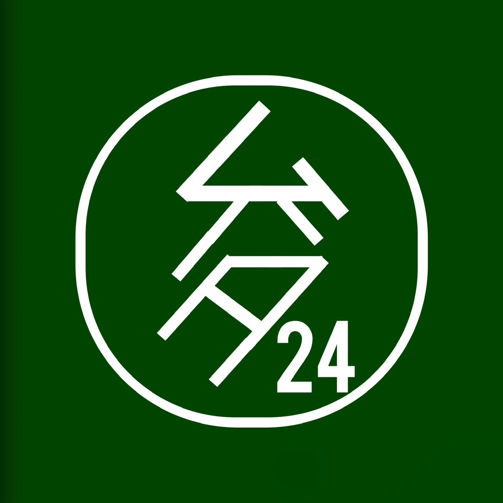

ムハタ24のホーム
Welcome to My Activity Site
クリエイターとしての活動場所や作品をまとめています。
Links
プロフィール
活動名：ムハタ24
職業：作曲家兼ピアニスト
サービス一覧
作曲
編曲
楽譜制作
offvocal音源制作
歌ってみたMix
Skill & Tools
Cubase Pro
MuseScore
AviUtl
Unity
OBS Studio
HTML5 / CSS3
JavaScript
Python
C / C++
Git / GitHub